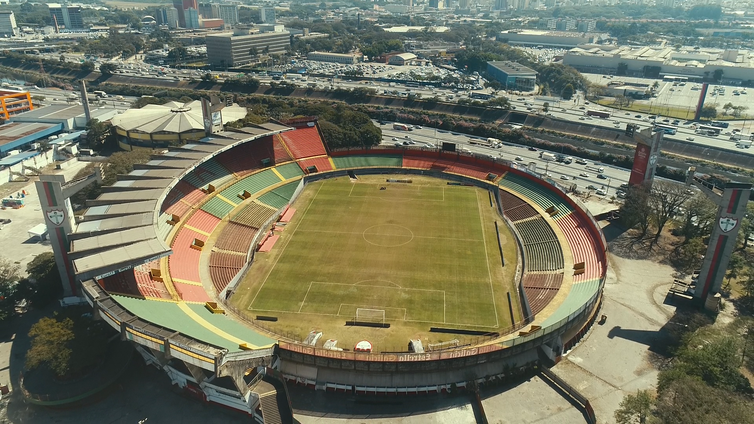
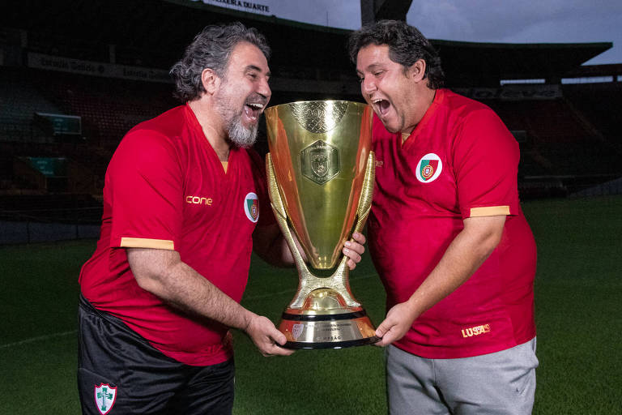

Meu site da Aula de Web
Em 27 de Outubro de 2023
Ir para a História do Time da Portuguesa
A Associação Portuguesa de Desportos (LUSA) é um clube poliesportivo brasileiro com sede em São Paulo que tem como modalidade esportiva principal o futebol.
Figura: Estádio do Canindé.
Figura: Comemoração do título da A2 de 2022.
Escrito por JJ
Avenida Doutor Antonio da Rocha Freitas, Jaguaruana/CE
CEP 62823-000